This view captures the scale of the Camp Nou from the pitch, where countless historic football moments have unfolded. And since, I am a barcelona fan it appeals to me the most, I would like to attend one of el clasicco match
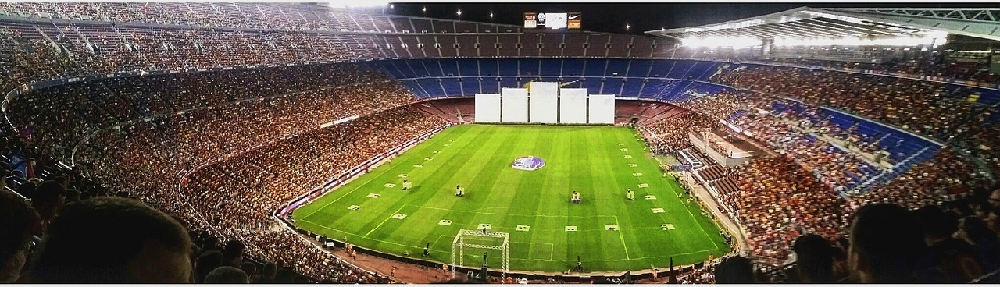
Another angle of Camp Nou showcasing its grandeur.
things i would like to wooul like to do at camp nou
attend a football match
take a picture with the playing squad
network with oother fans
seville City
Seville’s warm tones and historic skyline make it one of Spain’s most photogenic cities.
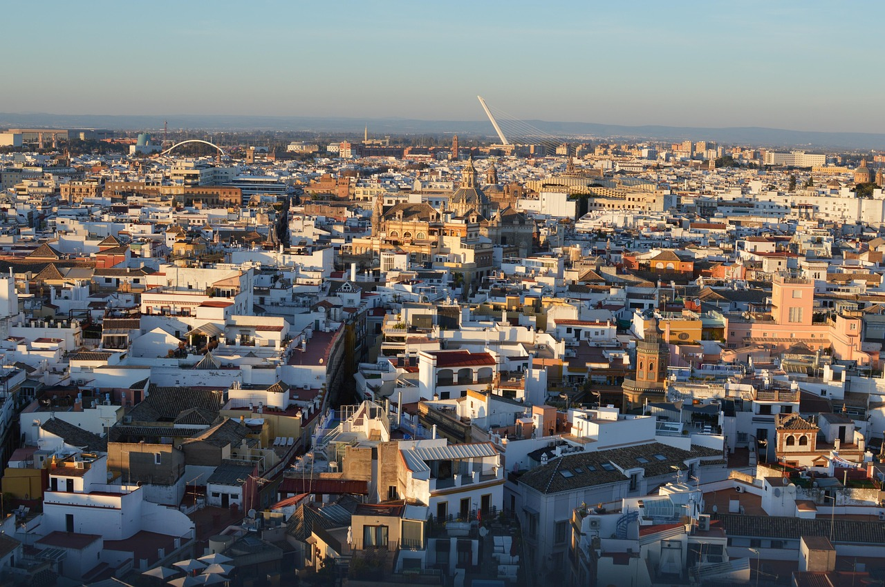
Rooftop view of Seville, Spain, during golden hour.
things i wouldlike to d a seville city
enjoy the warm breeze climatle
learn about historic details of the City
connect with various visitors to seville
nestled northen coast
I want to visit Cudillero to experience its peaceful charm, wander through its colorful hillside streets, and enjoy the fresh seafood by the harbor in a truly authentic Spanish fishing village.
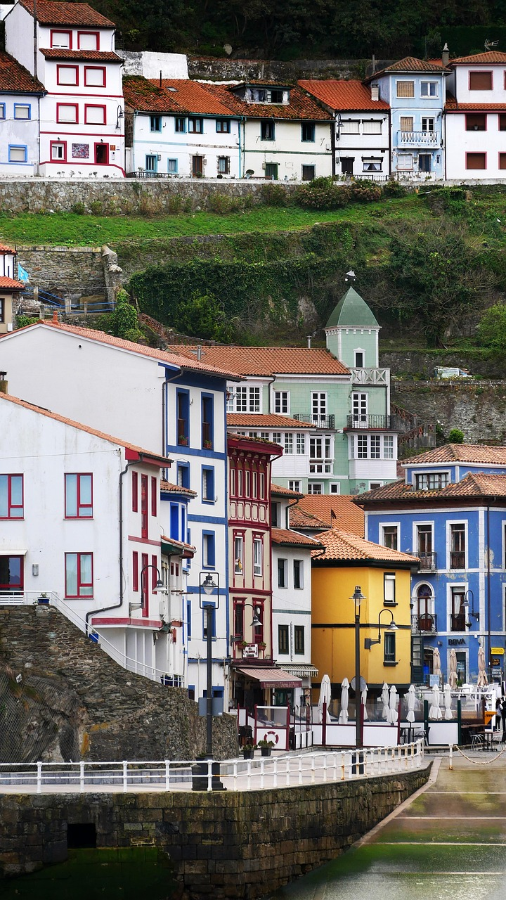
Colorful hillside homes overlooking the serene harbor of Cudillero, a hidden coastal gem in northern Spain.
things i would like to do in nestled northen coast
enjoy the warm breeze climatle
learn about historic details of the City
connect with various visitors to seville
ancient El Burgo town
I want to visit this charming town to walk its quiet stone paths, feel the history in every corner, and soak in the peaceful rhythm of village life. It’s the kind of place where time slows down, and I can truly disconnect and enjoy the beauty of traditional Spanish architecture and culture.
A peaceful stone path winds through the historic town of El Burgo, offering a glimpse into timeless village life.
things i would like to do in El burgo
interview various members of the community
observe different cultures
take pictures for memories
tranquil fountain spot
I want to visit this tranquil fountain spot in Spain to unwind by the crystal-clear waters, feel the refreshing mist from the cascading fountain, and enjoy the peaceful atmosphere surrounded by natural rock. It’s a perfect blend of nature and serenity, offering a calming escape from the busy world.
A peaceful fountain nestled among rocks in Spain, where water and nature create a perfect place to relax.
things i would like to do in nestled northen coast
Relax by the water and enjoy the peaceful surroundings
Take a refreshing dip in the clear pool
Capture stunning nature and landscape photos
Meditate or read beside the soothing sound of the fountain
Covadonga Basilica, Spain
The Covadonga Basilica is a stunning example of Neo-Romanesque architecture set against dramatic mountain scenery.
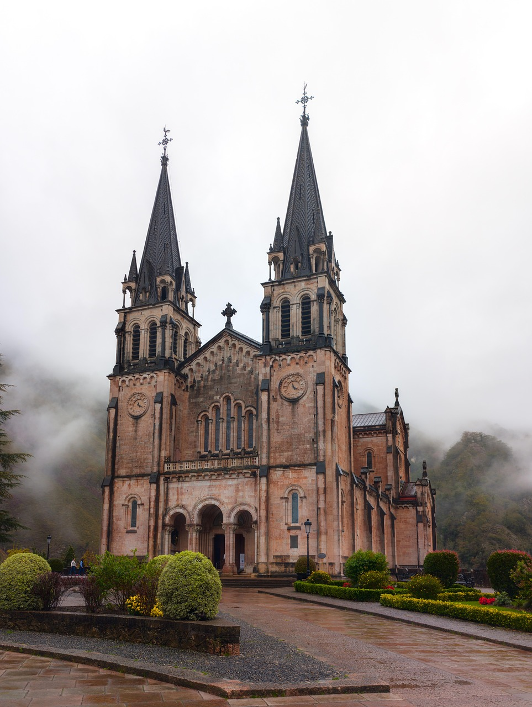
Covadonga Basilica nestled in the mountains of Asturias, Spain.
2. united-kingdom
Great Court british Museum
Located in London, the British Museum is renowned for its vast collection of art and artifacts from around the world.
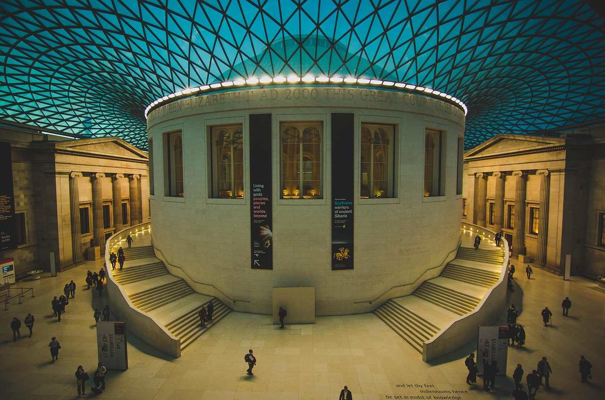
The Great Court at the British Museum, London.
things i would like to do in british Court Museum
Explore historical artifacts and exhibits.
Learn about the court system and its evolution.
Attend live demonstrations or reenactments of court trials.
Take a guided tour to gain in-depth insights into British legal history.
3. Italy
Cinque Terre, Italy
This picturesque seaside village in Cinque Terre, Italy, offers vibrant scenery and Mediterranean charm.
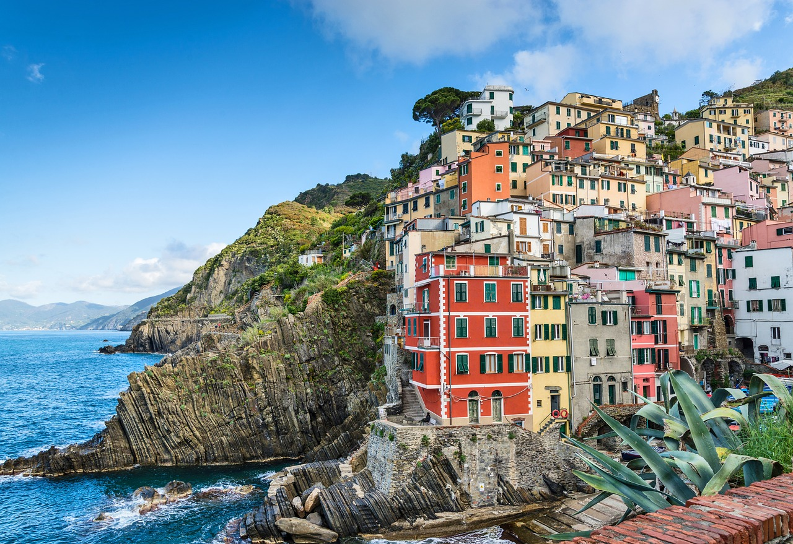
Colorful homes on the coast of Cinque Terre, Italy.
European Dome Interior
This perspective captures the golden elegance and detailed structure of a historic European dome ceiling.
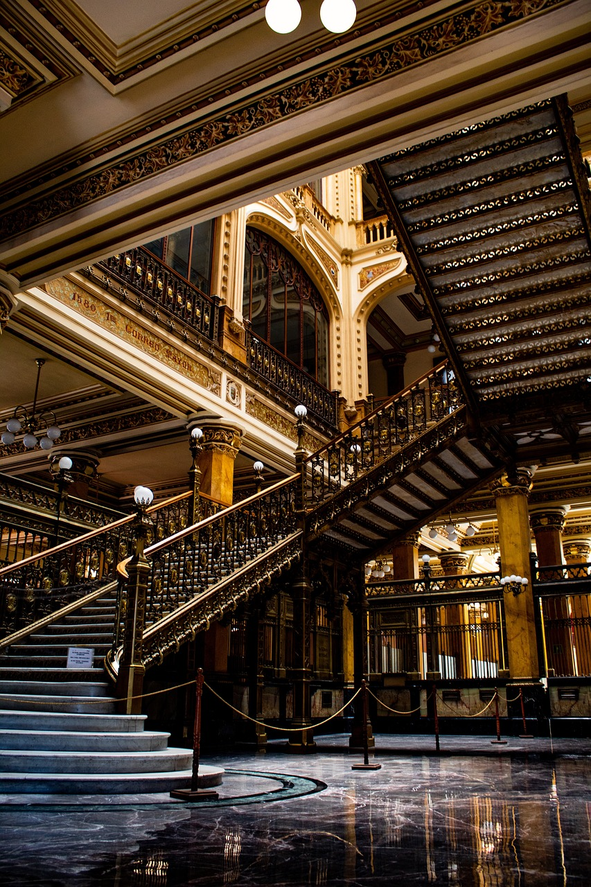
Elegant interior view under the dome.
4. Africa
Hippo in the Wild
Hippos are one of the most iconic African wildlife species, often seen wallowing in rivers and lakes.
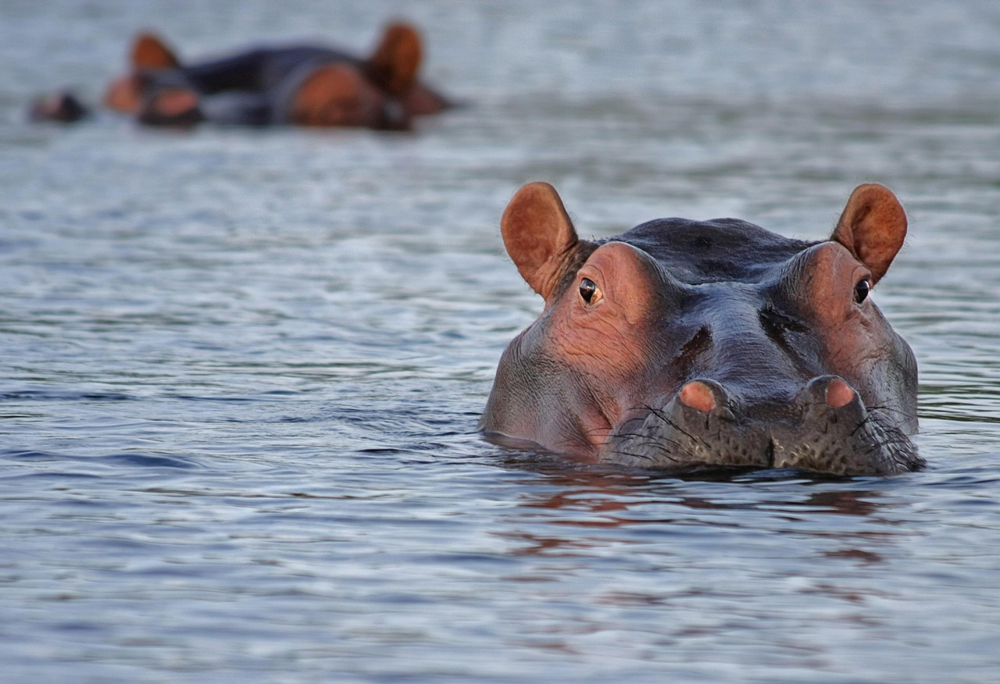
A hippo peeking out of the water in its natural habitat.
thing i would like to learn about hippo
How hippos are cared for in European environments.
programs aimed at protecting or breeding hippos in captivity.
5. London
London Eye & Victory Statue
This symbolic blend of modern and classical structures captures London’s rich historical and cultural essence.
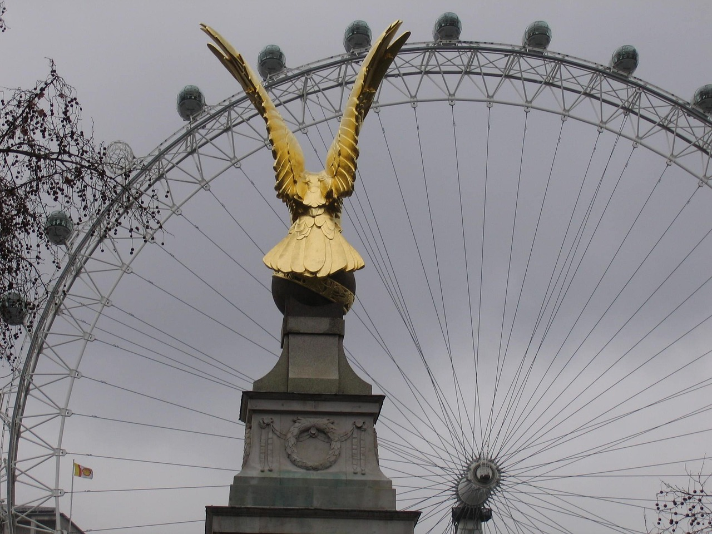
The London Eye with a statue of Victory in the foreground.
thing i woul like to do in london eye statue
Take panoramic photos – capture the London skyline and the statue of Victory.
Ride the London Eye capsule – enjoy breathtaking views of London from above.
Learn about the statue's history – explore its cultural significance and background.
6. united states of America
Hollywood Sign, Los Angeles
A global symbol of the film industry, the Hollywood sign overlooks Los Angeles from Mount Lee.
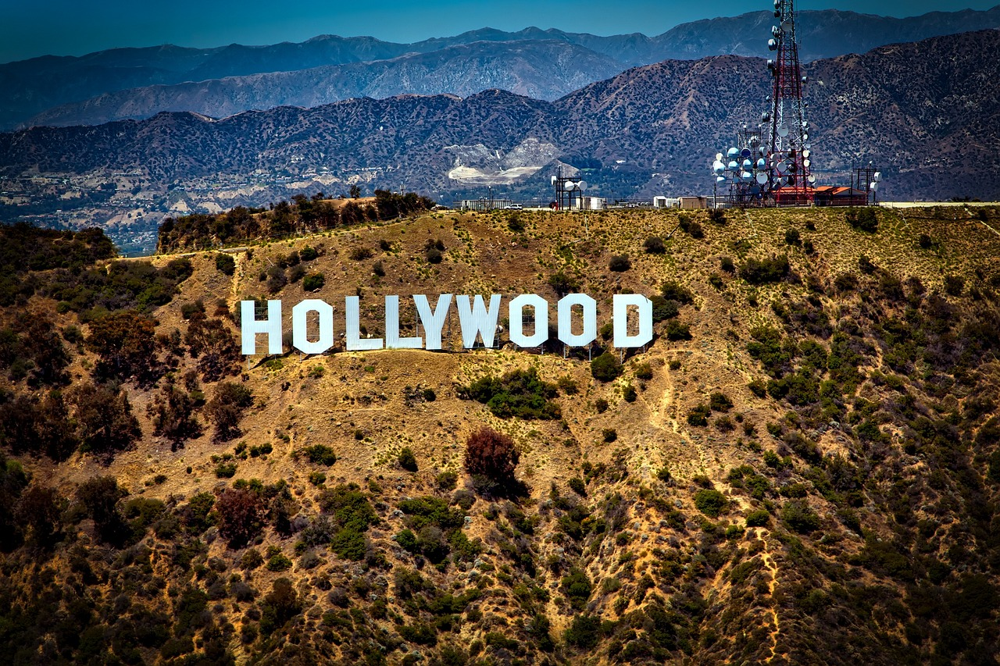
The iconic Hollywood sign in Los Angeles, California.
Things i would like to see in hollywood
Visit the Hollywood Walk of Fame
Explore the TCL Chinese Theatre
Visit the Hollywood Museum
Explore the TCL Chinese Theatre
Financial buildings and New York skyline
I want to visit the financial buildings and New York skyline because they represent the heart of global business and innovation. Being there would inspire me to dream bigger and understand how the world of finance operates at the highest level.
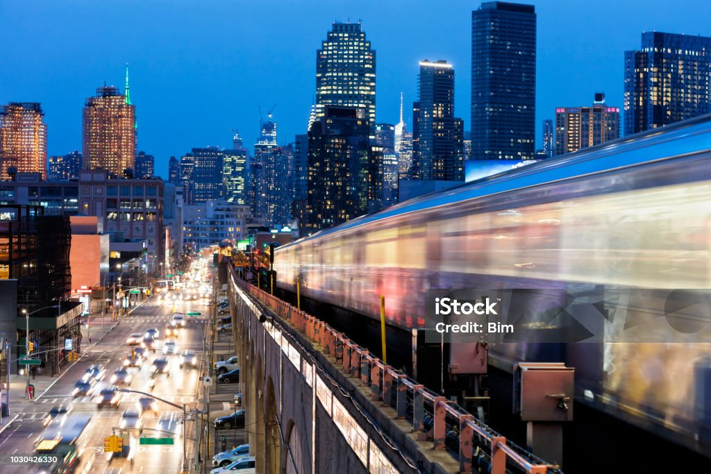
New York’s financial skyline — where ambition meets opportunity.
things i woulf like to doin newyork financial building
I would love to go to the top of a financial skyscraper and enjoy the skyline view.
I want to take a guided tour of Wall Street and learn about its history.
I would like to visit the New York Stock Exchange and see how live trading works.
I would like to network with professionals in finance and hear about their career journeys.
American flag waving with the Capitol Hill in the background
I want to visit Capitol Hill because it’s the center of American democracy and a symbol of the nation's strength and values. Seeing the American flag wave in front of this historic landmark would remind me of the sacrifices made for freedom and the importance of civic responsibility.
he American flag waves proudly with Capitol Hill standing strong behind it—freedom, democracy, and unity.
Things would like to learn in capital Hill
would like toI visit the Capitol Visitor Center and learn more about U.S. history and government.
I would like to tour the U.S. Capitol building and see where Congress meets.
I would love to take a photo with the American flag and Capitol Hill in the background.
I want to attend a live congressional session and watch democracy in action.
White House
I want to visit the White House because it is one of the most iconic symbols of American leadership and history. As the home of the President of the United States, it holds powerful decisions, global influence, and a deep sense of national pride.
The White House shines bright on a summer day—leadership, history, and national pride in one view.
this i would like to do at white house
I would like to take a guided tour inside the White House and explore its historic rooms.
I would love to walk around the White House lawn and take pictures.
I want to learn about past presidents and their impact on the country.
I would like to visit the nearby White House Visitor Center and see exhibits about its history.
Lake Park at sunset
I want to visit Echo Lake Park because it offers a perfect blend of natural beauty and city life. From above, the lake reflects the golden sunset, while the Downtown Los Angeles skyline creates a stunning backdrop. It's a place where I can relax, reflect, and enjoy breathtaking views that remind me of the balance between nature and urban energy.
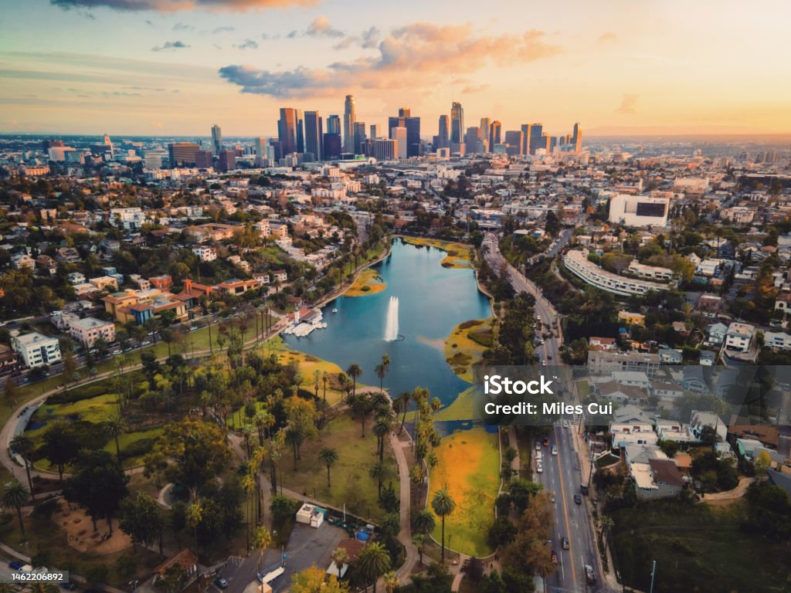
This is a drone photo taken from the above of the Echo Lake Park during sunset, showing the lake and the skyline of DTLA
I would like to take a peaceful walk around the lake during sunset.
I would love to capture drone photos of the lake and skyline.
I want to rent a pedal boat and enjoy the calm water.
would like to sit on the grass and sketch the DTLA skyline as the sun goes down.
7. Egypt
Desert Camel Ride
I want to experience a camel ride in the desert because it's a unique way to connect with ancient traditions and explore vast, golden landscapes. The calm rhythm of the camel's steps under the sun feels like traveling back in time.
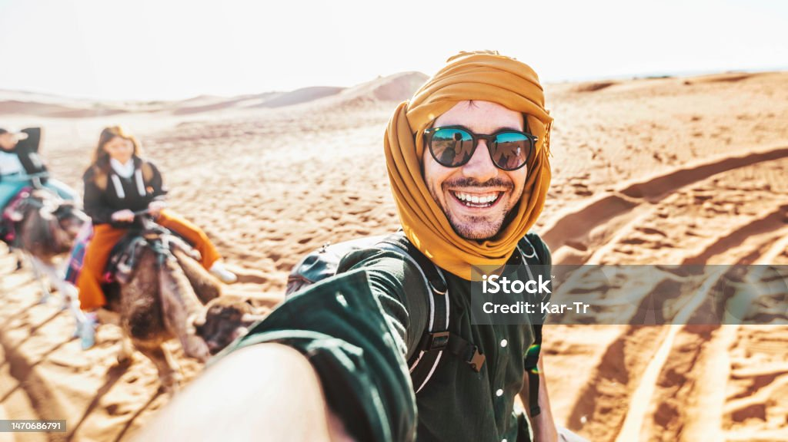
A scenic desert view showing a camel ride experience under the hot sun.
I would like to ride a camel across the sand dunes.
I want to take photos of the desert during sunset.
I would love to learn how locals care for camels.
I would like to camp overnight in the desert under the stars.
Pyramids of Egypt
I want to visit the pyramids because they are one of the greatest wonders of the ancient world. Standing before them would be a dream come true and a powerful reminder of human achievement.
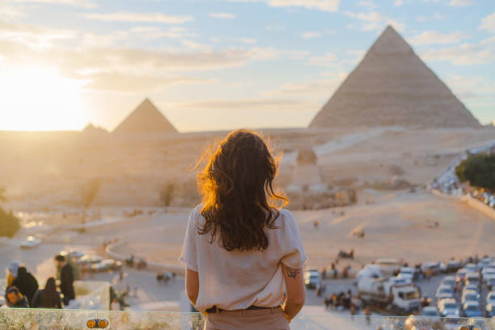
The great pyramids standing tall under the bright Egyptian sky.
I would like to explore the inside of a pyramid.
I want to take photos from the panoramic viewpoint.
I would love to learn about ancient Egyptian history from a guide.
I would like to ride a camel near the pyramids.
Swimming in Siwa Oasis
I want to visit Siwa Oasis because it offers a rare chance to swim in a peaceful natural spring in the middle of the desert. It’s the perfect mix of relaxation and adventure.
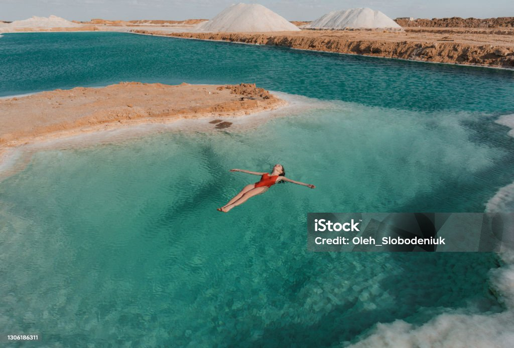
A refreshing swim in the clear waters of Siwa Oasis.
I would like to swim in the natural spring.
I want to relax under the palm trees.
I would love to try local Siwan food nearby.
I would like to explore the surrounding desert villages.
Caucasian woman Scene in pyramids
I want to explore remote desert locations because they offer peace, silence, and incredible natural beauty. The desert has a timeless quality that makes every moment feel special.
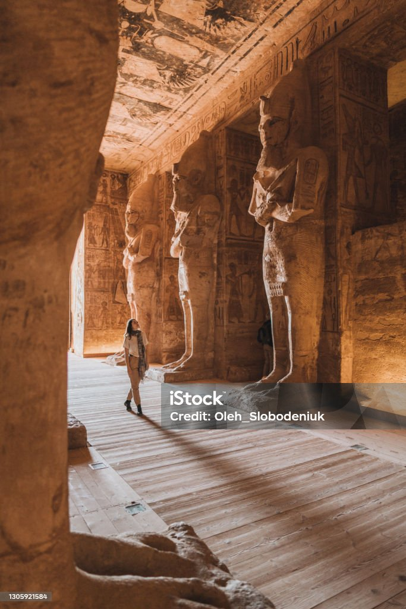
A quiet desert view with endless sand and sky.
I would like to hike across the dunes.
I want to take photos of the desert sunrise.
I would love to observe wildlife adapted to desert life.
I would like to visit a desert cultural center or museum.
Sunset Over the Desert
I want to witness a desert sunset because it offers one of the most colorful and peaceful experiences on Earth. The silence and shifting light create a magical atmosphere.
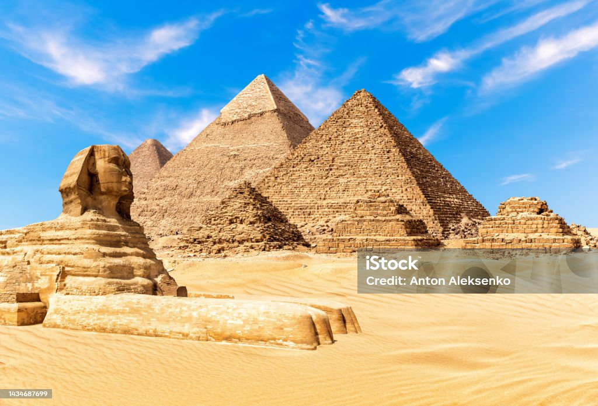
The sun setting over the desert, painting the sky in warm tones.
I would like to watch the sun go down from a high dune.
I want to take panoramic sunset photos.
I would love to enjoy traditional tea while watching the sky change.
I would like to journal or reflect in the peaceful environment.
8. france
Villefranche-sur-Mer, French Riviera
I want to visit Villefranche-sur-Mer because it offers stunning coastal views, colorful buildings, and the calm charm of the French Riviera. It’s the perfect place to relax, explore local culture, and enjoy Mediterranean beauty.
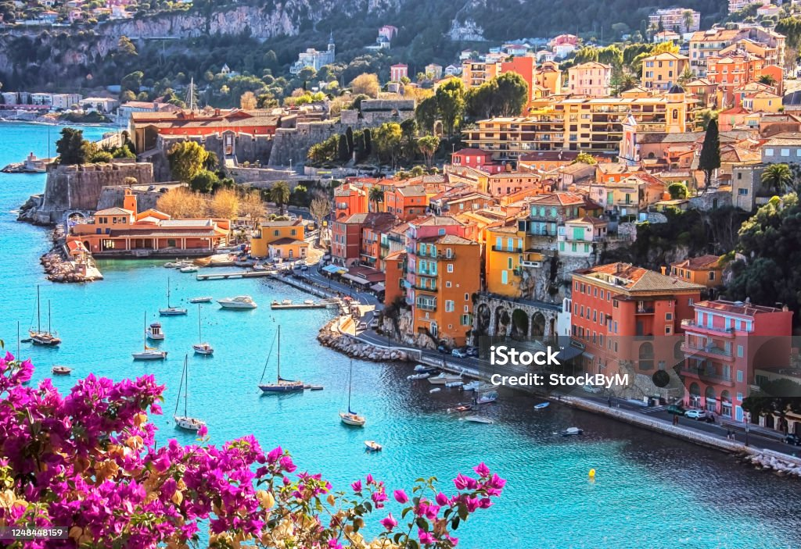
A breathtaking view of Villefranche-sur-Mer on the French Riviera, with colorful seaside homes and clear waters.
I would like to stroll along the harbor and enjoy the view.
I would love to taste fresh seafood at a local restaurant.
I want to swim in the Mediterranean Sea.
I would like to take photos of the vibrant buildings and narrow streets.
Charming French Village
I want to visit this charming village in France to enjoy quiet streets, traditional architecture, and authentic French culture. It’s a place where time slows down, and every corner feels like a postcard.
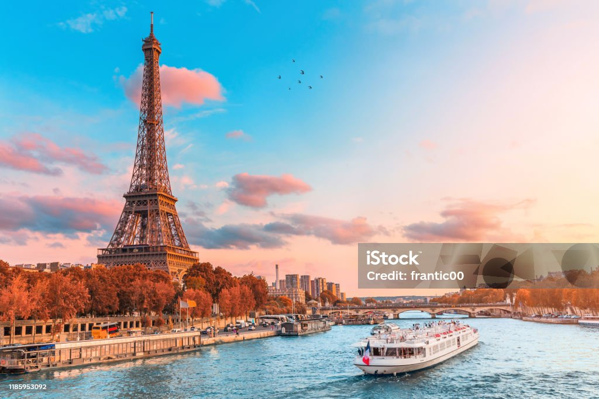
A peaceful French village featuring historic stone buildings and scenic streets.
I would like to walk through the cobblestone streets.
I want to enjoy a coffee at a small local café.
I would love to visit the local market for fresh produce and crafts.
I would like to sketch or photograph the village views.
Mountain View in Autumn
I want to visit this stunning mountain area in autumn because the colorful trees, peaceful surroundings, and fresh air make it a perfect escape into nature.
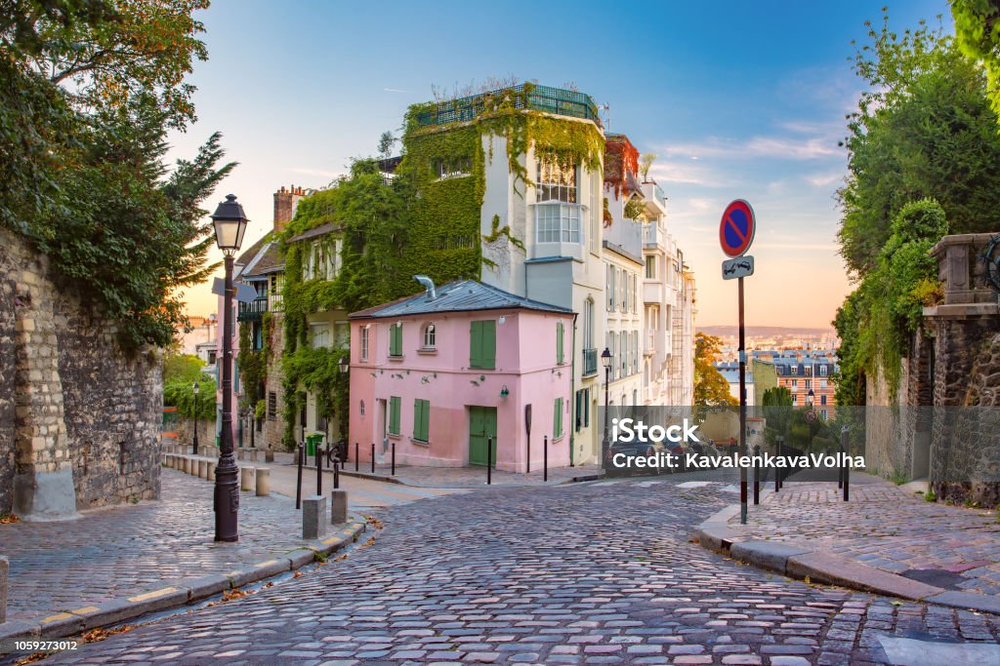
A scenic mountain valley with trees in brilliant fall colors and a clear sky.
I would like to go hiking and enjoy the fall scenery.
I want to take photos of the autumn leaves and mountains.
I would love to have a picnic in the fresh mountain air.
I would like to stay in a cozy cabin and enjoy the peace and quiet.
Mountain Lake Retreat
I want to visit this mountain lake because it looks peaceful and untouched—perfect for relaxation, photography, and reconnecting with nature.
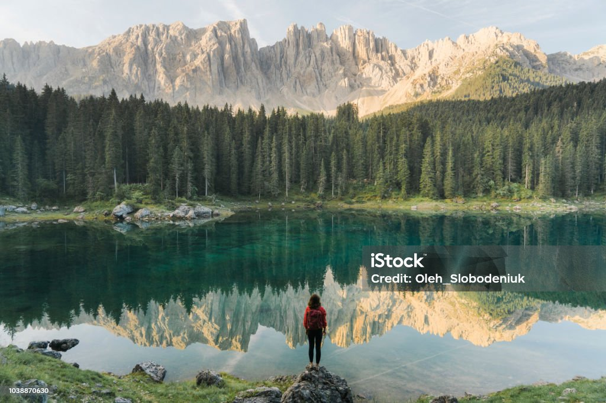
A quiet mountain lake with a perfect reflection of trees and sky on its surface.
I would like to walk along the lakeside trail.
I want to take reflection photos at sunrise or sunset.
I would love to meditate or journal by the water.
I would like to go kayaking on the calm lake surface.
.jpg)
.jpg)